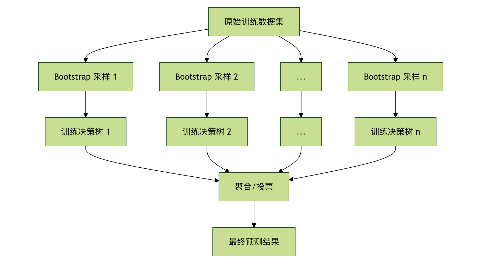
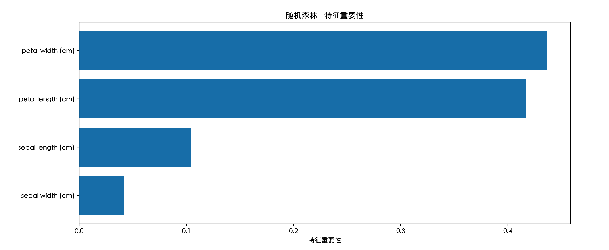

ランダムフォレスト
想像してみてください。あなたは重要なクイズ大会に参加していて、難しい問題に直面しています。一人のトップ専門家の判断を信じますか、それとも100人の実力のある選手による投票結果を信じますか？ほとんどの場合、集合知は個人の偏見や限界を補い、より安定した正確な意思決定を可能にします。
機械学習の世界では、ランダムフォレスト（Random Forest）まさにこの集合知思想の傑出した代表です。多数の決定木を構築し、それらに共同で投票させて予測を行うことで、最も強力で人気のある機械学習アルゴリズムの一つとなっています。
ランダムフォレストとは？
ランダムフォレストはアンサンブル学習（Ensemble Learning）に基づく機械学習アルゴリズムです。その核心理念は非常にシンプルです：三人寄れば文殊の知恵。
- 森： 複数の決定木（Decision Tree）からなる集合を指します。ランダム： 各決定木を構築する際、アルゴリズムは2種類のランダム性を導入し、それぞれの木が他と異なることを保証します。
- 最終的に、分類タスクでは、森は投票（多数決）
で結果を出し、回帰タスクでは平均値を取ることで結果を出します。核心理念：Bagging とランダム性ランダムフォレストの成功は、二つの大きな基盤の上に成り立っています：
核心理念：Bagging とランダム性
元のトレーニングデータセットから
Bagging（Bootstrap Aggregating）：
- 復元抽出でランダムにサンプルを抽出し、複数の異なるサブトレーニングセットを生成します。つまり、同じサンプルがサブセット内に複数回出現する可能性があり、別のサンプルは一度も出現しない可能性があります。Aggregating（集約）各サブトレーニングセットで決定木を独立に訓練し、最後にすべての木の結果を集約します（投票または平均）。
- 特徴量のランダム性各木の各ノードで分割を行う際、アルゴリズムはすべての特徴量を考慮するのではなく、

すべての特徴量からランダムにサブセットを選び：
- 、そのサブセットの中から最適な分割特徴を選択します。これにより、木と木の間の多様性がさらに高まり、森が問題の異なる側面を見ることができます。簡単に言うと、ランダムフォレストは、各木を少しずつ異なるデータと特徴量の視点で訓練させることで、多様な
- 専門家委員会
を創り出します。たとえ一部の木が誤りを犯しても、他の正しい木が投票によってそれを修正できるため、単一の決定木よりも安定して強力な性能が得られます。アルゴリズムの流れと重要なパラメータ。ランダムフォレストの動作手順
アルゴリズムの流れと重要なパラメータ
ランダムフォレストの動作手順
を使用する際は

重要なハイパーパラメータの詳細
パラメータ名scikit-learn意味
| 典型的な値 / 影響 | わかりやすい説明 | 森の中の決定木の数。 | デフォルトは100。値が大きいほど、モデルは通常安定し、性能も良くなりますが、計算コストも高くなります。 |
|---|---|---|---|
n_estimators |
「委員会の人数」。人が多いほど、意思決定は通常信頼性が高くなりますが、会議の時間も長くなります。 | 単一の決定木の最大深さ。 | デフォルト（制限なし）。深さを制限することで過学習を防ぎ、モデルをよりシンプルにできます。 |
max_depth |
「各人の発言時間を制限する」。特定の専門家（木）が訓練データの細部にこだわりすぎるのを防ぎます。 | 最適な分割を探すときに考慮する特徴量の数。None整数、浮動小数点数、または |
。これは「特徴量のランダム性」を導入するための重要なパラメータです。「毎回の議論ではランダムにいくつかの側面だけを見る」。各木が異なる角度から問題を分析し、多様性を高めます。 |
max_features |
ノード分割に必要な最小サンプル数。 | デフォルトは2。値が大きいほど、木の成長は保守的になり、過学習しにくくなります。'auto'/'sqrt'「1つのグループが議論を続けるには少なくとも何人必要か」。1つか2つのサンプルだけで新しいルールを作るのを防ぎます。 |
葉ノードに必要な最小サンプル数。デフォルトは1。値が大きいほど、モデルは滑らかになります。 |
min_samples_split |
「最終的な結論は少なくともいくつかのケースに基づく必要がある」。各結論が一定のデータに裏付けられていることを保証します。 | Bootstrapサンプリングを使用するかどうか。 | デフォルト。もし設定すると |
min_samples_leaf |
、データセット全体を使って各木を訓練しますが、ランダム性の一部が失われます。 | 「同じ人が繰り返し発言することを許可するか」。有効にすることがBaggingの真髄です。 | 実践演習 - コード例定番のアヤメ（Iris）分類データセットを使って実際にやってみましょう。 |
bootstrap |
例1：基本的な分類タスク | 例True# 必要なライブラリをインポートFalse# 1. データを読み込む |
# 特徴量：がくの長さ、幅、花びらの長さ、幅# ラベル：3種類のアヤメ |
実践演習 - コード例
# 3. ランダムフォレスト分類器を作成
例1：基本的な分類タスク
例
from sklearn.datasets import load_iris
from sklearn.model_selection import train_test_split
from sklearn.ensemble import RandomForestClassifier
from sklearn.metrics import accuracy_score, classification_report
# 6. モデルの性能を評価
iris = load_iris()
X = iris.data "テストセットの正解率："
y = iris.target 分類レポート："
コードの解説：
X_train, X_test, y_train, y_test = train_test_split(X, y, test_size=0.3, random_state=42)
ライブラリのインポート
はランダムフォレスト分類器です。
rf_clf = RandomForestClassifier(n_estimators=100, max_depth=5, random_state=42)
データの読み込み
rf_clf.fit(X_train, y_train)
： アヤメデータセットには150個のサンプル、4つの特徴量、3つのクラスがあります。
y_pred = rf_clf.predict(X_test)
データ分割
print(： データの70%をトレーニングに、30%をテストに使用し、モデルの新しいデータへの汎化能力を検証します。, accuracy_score(y_test, y_pred))
print("\nモデルのインスタンス化)
print(classification_report(y_test, y_pred, target_names=iris.target_names))
毎回の実行結果が再現可能であることを保証します。
- モデルの訓練：
RandomForestClassifierメソッドは100本の決定木を構築します。 - 予測と評価： 訓練済みの森を使ってテストセットを予測し、正解率などの指標を計算します。
- 出力：例2：特徴量の重要度を確認する
- ランダムフォレストにはもう一つの強力な機能があります。各特徴量の予測への貢献度を評価することです。：
random_state=42例 - # 必要なライブラリをインポート：
fit# -------------------------- 中国語フォントの設定 start -------------------------- - # Windows 優先# macOS 優先
# Linux 優先
setosa 1.00 1.00 1.00 19
versicolor 1.00 1.00 1.00 13
virginica 1.00 1.00 1.00 13
accuracy 1.00 45
macro avg 1.00 1.00 1.00 45
weighted avg 1.00 1.00 1.00 45
例2：特徴量の重要度を確認する
# -------------------------- 中国語フォントの設定 end --------------------------
例
from sklearn.datasets import load_iris
from sklearn.model_selection import train_test_split
from sklearn.ensemble import RandomForestClassifier
from sklearn.metrics import accuracy_score, classification_report
import pandas as pd
import matplotlib.pyplot as plt
# ラベル：3種類のアヤメ
plt.rcParams['font.sans-serif'] = [
# 2. トレーニングセットとテストセットに分割
'SimHei', 'Microsoft YaHei',
# 3. ランダムフォレスト分類器を作成
'PingFang SC', 'Heiti TC',
# ここでは100本の木を設定し、最大深さを5に制限します
'WenQuanYi Micro Hei', 'DejaVu Sans'
]
# 4. モデルを訓練
plt.rcParams['axes.unicode_minus'] = False
# 5. テストセットで予測
# 6. モデルの性能を評価
iris = load_iris()
X = iris.data "テストセットの正解率："
y = iris.target 分類レポート："
# 特徴量の重要度を取得
X_train, X_test, y_train, y_test = train_test_split(X, y, test_size=0.3, random_state=42)
# 確認しやすいようにDataFrameを作成
'特徴量'
rf_clf = RandomForestClassifier(n_estimators=100, max_depth=5, random_state=42)
'重要度'
rf_clf.fit(X_train, y_train)
'重要度'
y_pred = rf_clf.predict(X_test)
"特徴量の重要度の並び替え："
print(# 可視化, accuracy_score(y_test, y_pred))
print("\n'特徴量')
'重要度'
feature_importances = rf_clf.feature_importances_
features = iris.feature_names
'特徴量の重要度'
importance_df = pd.DataFrame({
'ランダムフォレスト - 特徴量の重要度': features,
'重要性': feature_importances
}).sort_values('重要性', ascending=False)
print("特征重要性排序：")
print(importance_df)
# 可视化
plt.figure(figsize=(8, 5))
plt.barh(importance_df['特征'], importance_df['重要性'])
plt.xlabel('特征重要性')
plt.title('随机森林 - 特征重要性')
plt.gca().invert_yaxis() # 最も重要な特徴を上部に表示する
plt.show()

出力分析：花びらの長さと花びらの幅の重要性が、がくの寸法よりもはるかに高いことに気づくかもしれません。これは植物学の常識に非常に合致しており、花びらの特徴は確かに異なるアヤメの種類を区別する鍵です。この機能は、特徴量の選択とデータ理解にとって非常に価値があります。
第4部：利点、欠点、適用シナリオ
利点
- 高精度： アンサンブル学習は通常、現在のデータにおいてトップクラスの性能を達成できます。
- 過学習への耐性が強い： Bagging とランダムな特徴量選択のおかげで、剪定しなくても過学習しにくいです。
- データへの要求が緩やか： 数値型とカテゴリ型の特徴量を処理でき、特徴量スケーリング（正規化など）は不要です。
- 特徴量の重要度を提供： 組み込みの特徴量評価は貴重な副産物です。
- 並列化が容易： 各ツリーの学習は独立しているため、簡単に並列高速化できます。
欠点
- モデルの解釈可能性が低い： 何百本ものツリーからなる「ブラックボックス」は、単一の決定木よりもはるかに解釈が困難です。
- 学習と予測の速度が比較的遅い： ツリーの数が多い場合、より多くの計算リソースと時間が必要です。
- メモリ使用量が大きい： フォレスト全体のすべてのツリー構造を保存する必要があります。
典型的な適用シナリオ
- 分類問題： スパムメール識別、病気の診断、画像分類など。
- 回帰問題： 住宅価格予測、売上予測など。
- 特徴量選択： 出力された特徴量の重要度を利用して特徴量を絞り込みます。
- 欠損値処理： ランダムフォレストは欠損値を処理する優れた自然な能力を持っています。
クリックしてノートを共有
<p style="font-size:14px;">ノートはこの記事の内容を拡張したものである必要があります！</p><br> <p style="font-size:12px;"><a href="../tougao.html" target="_blank">記事投稿は、こちらをクリック</a></p> <p style="font-size:14px;"><a href="../w3cnote/runoob-user-test-intro.html" target="_blank">登録招待コードの取得方法</a></p> <h3 class="text-muted"><i class="fa fa-info-circle" aria-hidden="true"></i> ノートを共有する前に<a href=";.html" class="runoob-pop">ログイン</a>必須！</h3> <p><a href="../w3cnote/runoob-user-test-intro.html" target="_blank">登録招待コードの取得方法</a></p>